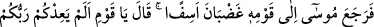

yapmaya karar vermişti. Onun ayrılması ile birlikte buzağı heykelini yapmaya yöneldi.
Hz. Mûsâ’ya Allah tarafından haber verildiğinde ise bu fitne meydana gelmişti.
Sâmirî, İsrailoğulları’nın önde gelenlerinden idi. İsrailoğulları’nın Sâmire kabilesine
mensubtu. Ya da o, ineklere tapan Kirman halkından bir kâfirdi. İsrailoğulları’nın
arasına katılınca onlarla birlikte müslüman oldu. Ancak onun gönlünde hâlâ sığırlara
tapınma husûsunda bir meyil vardı. Böylece Allah Teâlâ onun vâsıtasıyla
İsrailoğulları’nı sınadı. Allah, Sâmirî’nin gözlerinden perdeyi kaldırdı da o, Cebrâil’in
bindiği hayat atının izini gördü. O atın adı Hayzûm’dur. Sâmirî, o atın izinden bir miktar
toprak aldı. Şeytanın vesvesesi ile o toprağı eritilmiş ziynetlerin içine kattı.
Kâşifî der ki: “Sahih olan onun İsrâiloğulları’ndan olduğudur. Fir’avn onların erkek
çocuklarını öldürdüğü zamanda dünyaya geldi. Annesi doğumundan sonra onu Nil
nehrinin kenarında bir adaya bıraktı. Hak Teâlâ Cebrâil’e onu besleyip büyütmesini,
ona yiyecek ve içecek hazırlamasını, onu muhâfaza etmesini emir buyurdu. Mûsâ (a.s.)
Tûr’a gittiği zaman Sâmirî, Hârun (a.s.)’ın yanına vardı.
“Kıptîler’den bir miktar altın ve gümüş emanet almıştık. Onlar bizimledir. Onlarda
tasarrufta bulunmak bize revâ değildir. Görüyorum ki İsrâiloğulları onları alıp
satıyorlar. Hüküm buyursanız da hepsini toplasalar ve yaksalar.” dedi.
Hârun (a.s.) emretti, bütün altın ve gümüşlerini getirdiler ve yakmak için bir çukura
döküp ateşe verdiler. Sâmirî eli çabuk bir kuyumcu idi. Eriyen o altın için bir kalıp
hazırlamıştı. Eriyen altını kalıba döktü ve ona buzağı şekli verdi. Cebrâil (a.s.)’ın
‘hayat atı’ adı verilen atının ayağının bastığı topraktan bir miktar o heykelin içine attı.
Buzağı derhal dirildi, eti ve derisi zâhir oldu, sesi çıkmaya başladı.
Bir görüşe göre buzağı dirilmemiştir. Fakat öyle kalıba dökülmüştür ki ses
çıkarıyordu. İsrâiloğulları’nın yirmi dört bölüğünden dördü ona secde ettiler. Hak
Teâlâ, Mûsâ (a.s.)’a ‘Sen kavminin arasından çıktıktan sonra onlar buzağıya tapmaya
başladılar.’ diye haber verdi.
86. Bunun üzerine Mûsâ, öfkeli ve üzüntülü olarak kavmine döndü. “Ey kavmim!
Rabbiniz size güzel bir vaadde bulunmamış mıydı? Şu halde size zaman mı çok
uzun geldi, yoksa üstünüze Rabbinizin gadabının inmesini mi istediniz ki, bana olan
vaadinizden döndünüz?” dedi.
“Bunun üzerine Mûsâ, öfkeli ve üzüntülü olarak kavmine döndü;” Mûsâ (a.s.)
Zülkâde’den on gün ve Zülhicce’nin tamamı olmak üzere kırk günlük süreyi
tamamladıktan sonra Tevrat’ın yazılı olduğu levhaları alıp öfkeli ve üzüntülü bir şekilde